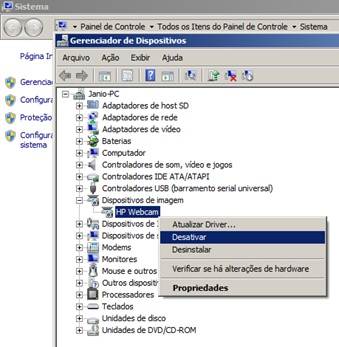
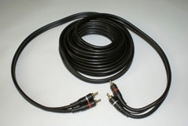

Antes de Instalar o sistema é preciso verificar se seu computador de mesa ou notbook tem WEBCAM ou SCANNER instalados, caso esses equiamentos encontra-se instalados é necessario desativa-los. Para desativar os equipamentos entre em Executar e digite os comandos: mmc devmgmt.msc, depois de digitar o comando tecle Enter ou click em OK.
Após digitar Enter ou clicar em OK o windows vai abrir o Gerenciador de Dispositivos. Click com o botão direito do mouse em cima do dispositivo (Webcam ou Scanner) e click em desativar conforme a imagem abaixo.
|  |
Instalção da placa de captura USB.
1 - Conectar a placa de captura em qualquer porta USB do notebook ou computador comum com Windows.
Placa de Captura |
|
Entrada USB Computador de Mesa |
Entrada USB Notbook |
Observação: Quando retirar a placa de captura, procure conectar sempre na mesma porta USB que foi instalada.
1.2 Instalando o driver da placa de captura.
Insira o CD na leitora, e faça os passos abaixo:
2 - Localize em seu aparelho de exames (ultrassom, colposcopio, processadora, etc.) a(s) saída(s) de vídeo “OUT” e conecte o cabo de acordo com a conexão, que pode ser RCA, S-vídeo ou BNC. Use o mesmo cabo e faça a conexão também na placa de captura USB.
BNC |
 Cabo RCA |
Cabo S-vídeo |
Caso a entrada for BNC use o conversor RCA para BNC.
Conversor RCA para "BNC" |
3 - Conecte o pedal ou dispositivo na porta USB do seu computador de mesa ou Notbook para capturar as fotos.
Pedal para capturar imagens USB |
Observações: Não deixe o carrinho do aparelho, rack ou qualquer outro equipamento passer sobre o cabo do pedal e do vídeo. Para acionar o pedal também podem ser usadas as mãos pressionando o pedal. |
Outros acessórios do KIT-CAPTURA
Divisor de sinal RCA |
Conheça as conexões da placa de captura |